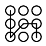
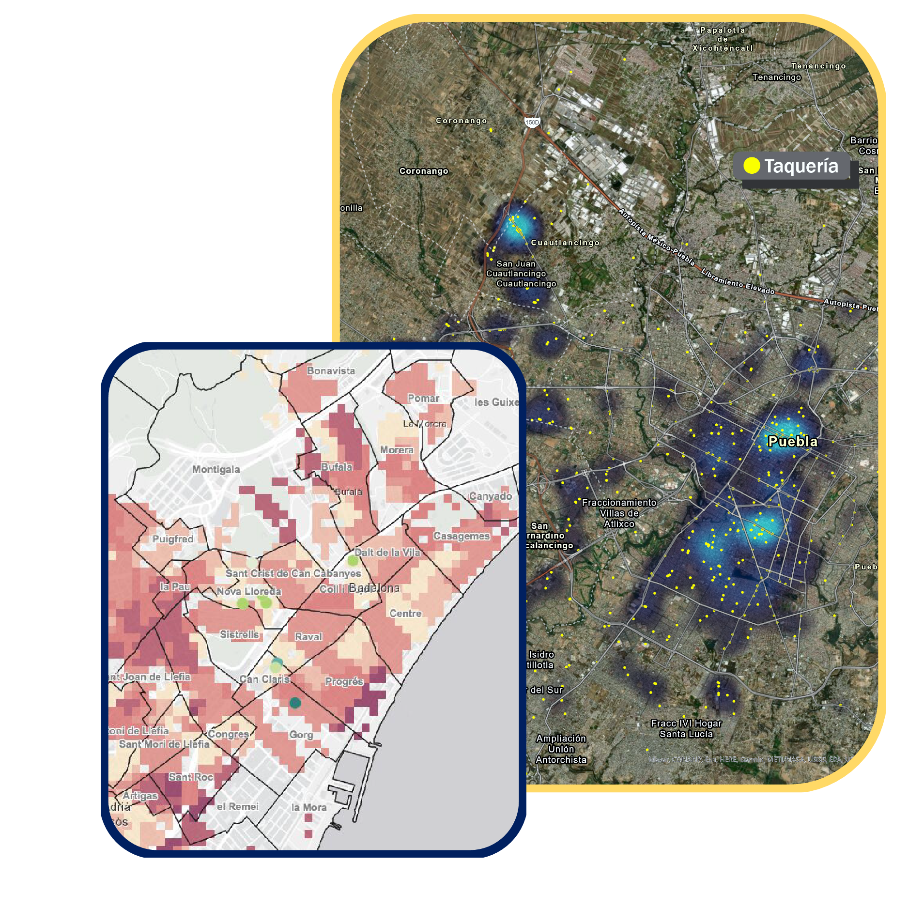
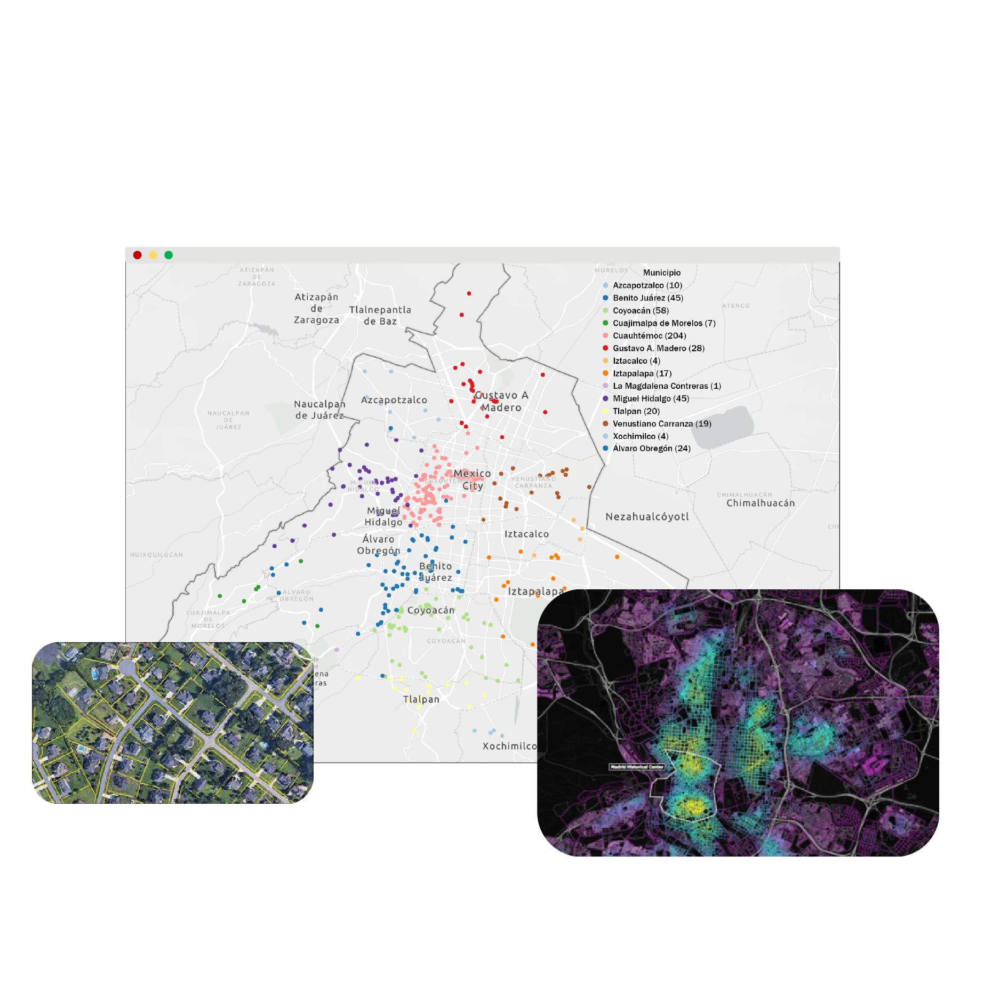
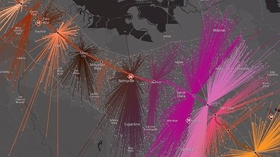
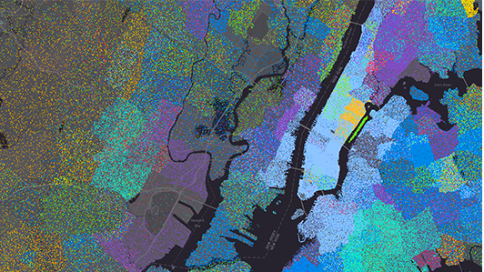
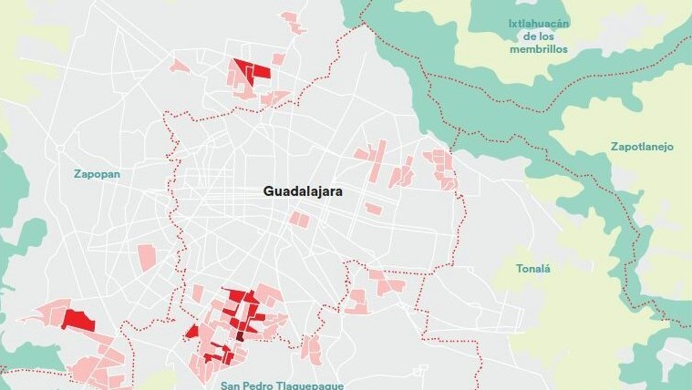
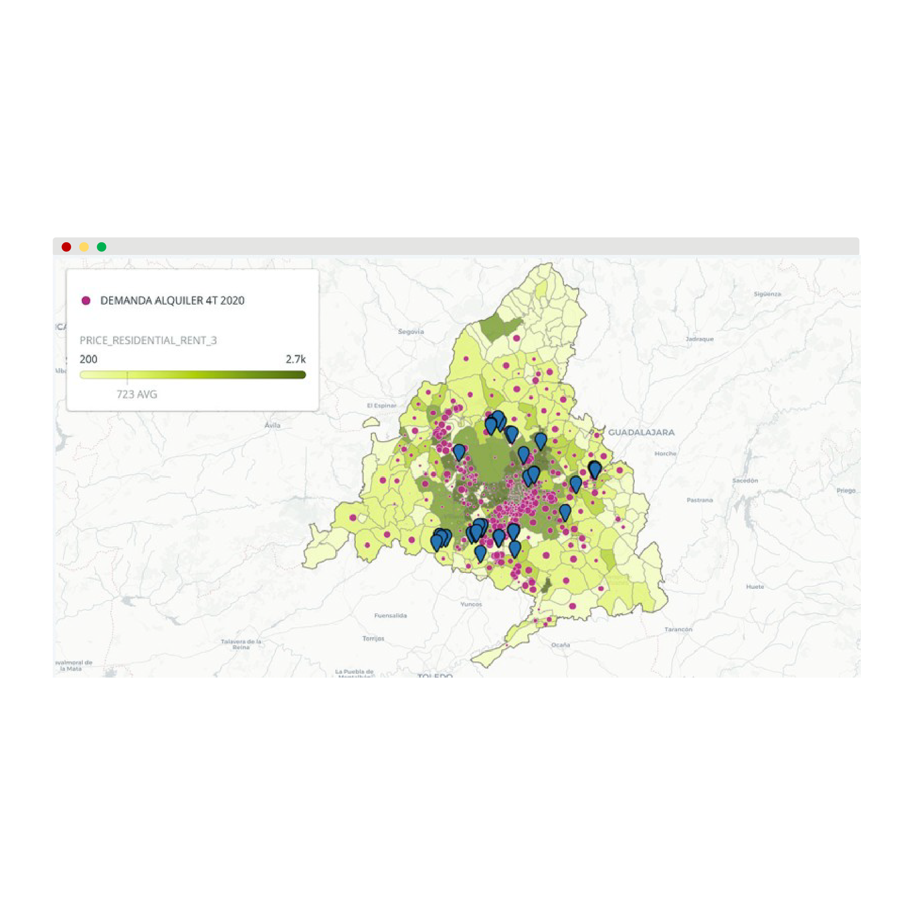

Identifica las variables clave del territorio que influyen en los procesos de tu negocio.
Realiza decisiones con datos demográficos, económicos y de ubicación.
Identifica las zonas donde tus clientes viven, transitas o visitan con recurrencia.

Soluciones basadas en metodologías disruptivas con inteligencia de localización..
La información territorial de tu negocio es un activo estratégico que hoy debes entender y dominar
La Localización Inteligente te beneficiará en procesos de negocios como generando valor en sus estrategias de marketing, ventas, distribución, expansión y análisis territorial.



Mapear y analizar los datos demográficos de los clientes. Tomar decisiones basadas en datos sobre la selección de sitios, marketing y clasificación de productos.

Los mapas y el análisis espacial fortalecen los inventarios y las decisiones de marketing. Ver cómo y dónde interactúan los clientes con tu marca.

Predecir los sitios más rentables basándose en presencia competitiva, demografía de clientes potenciales, acceso a cadenas de suministro y más.
El estudio territorial es clave para cualquier desarrollo inmobiliario, conoce la plusvalia dependiendo de la cercanía de comercios o servicios.
